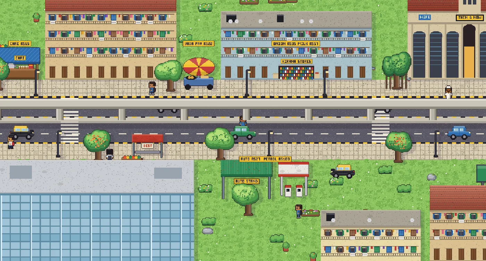
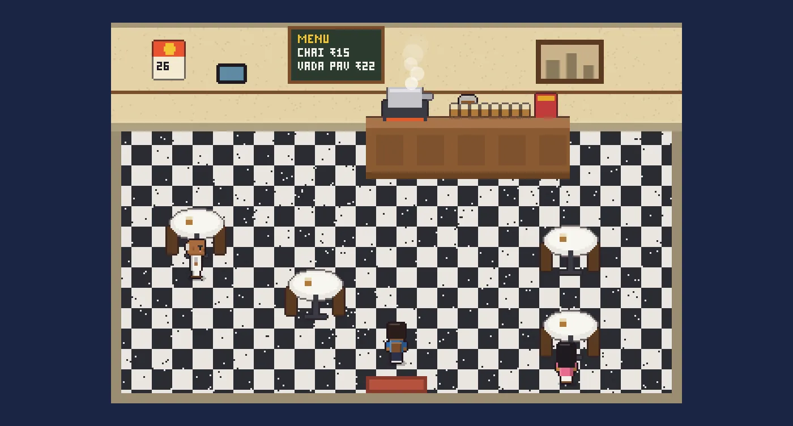
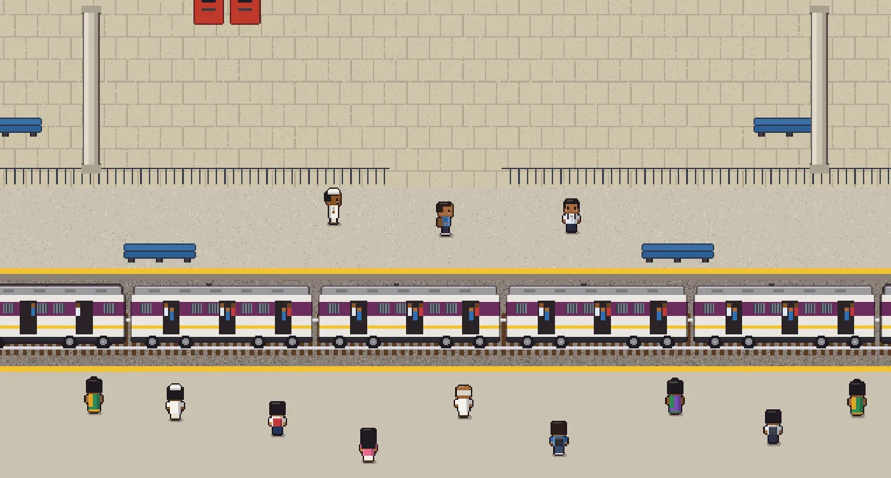

GAME GUIDE AND PRODUCT DOCUMENT
What the game is, how to play it, and how it is made, including every programming language it uses, in plain words.

A game that answers a question everyone in India asks: "How much did this cost back then?"
People love comparing prices. "Vada pav was two rupees!" "A local train ticket was three!" But nobody kept a proper record of street prices over the years. Official numbers track inflation in general, not your cutting chai. So these conversations run on memory, and memory is often wrong.
Then & Now turns 30 years of real street prices into a city you can walk around. Every shop is a little piece of data. Move the Time Machine slider from 1995 to 2026 and the prices, the vehicles and the buildings all change in front of you.
Five minutes from opening it to knowing what chai cost in 1995.


Every feature, what it does, and its status.
| Feature | What it does | Status |
|---|---|---|
| The city | A drone view of a Mumbai or Delhi neighbourhood: roads, chawls, sea front, trees, people walking, live traffic | DONE |
| Walk-in shops | Chai shop, kirana and railway station you can step inside, each with a shopkeeper | DONE |
| Time Machine | Slide from 1995 to 2026. Prices, vehicles and buildings all change. | DONE |
| Zoom | Pull back to see the whole area, or zoom right in | DONE |
| Safe traffic | Cars and buses stop and honk for you instead of driving through you | DONE |
| Two cities | Mumbai and Delhi, each with its own map, people, vehicles and price data | DONE |
| Analyst Mode | Charts of every price, with sources and how sure we are | DONE |
| Survive the month | A budget game: get through four weeks of street spending in any year | DONE |
| Price postcards | Make a picture comparing two years, to share on WhatsApp or anywhere | DONE |
| Multiplayer | Up to 8 friends in one street, with chat and a shared Time Machine | DONE |
| The bazaar | Ask about any price or report what you paid. A reviewer checks everything first. | DONE |
| Works offline | After the first visit (or straight away in the apps), the game runs without internet | DONE |
| Apps | Download for Android, Windows and Mac. Add to home screen on iPhone. | DONE |
Mumbai: the sea front, chawls with washing on the balconies, the chai tapri, the vada pav cart, the kirana, a local train station, BEST double-deckers, kaali-peeli taxis, and the Metro from 2014.
Prices: chai, vada pav, local train, auto, petrol, onion, milk.
Delhi: the Yamuna ghats, Old Delhi havelis, a city gate, a gurudwara, Blueline buses, green CNG autos, cycle rickshaws, and a Metro that opens in December 2002.
Prices: chai, samosa, Metro, auto, petrol, onion, milk.
Old street prices were never officially recorded, so every number carries a label:
| Label | What it means |
|---|---|
| documented | From an official notice, like a fare chart |
| reported | A dated newspaper report gives the number |
| estimated | Our best guess. Still needs a source. Shown as a hollow dot in charts. |
| interpolated | A year between two known prices, filled in smoothly. The shopkeeper says so. |
The whole system on one page.
| Tool | What it is, simply | Its job in this game |
|---|---|---|
| Next.js | A kit for building websites | Makes all the pages and turns them into fast, simple files |
| React | A kit for buttons and screens | Menus, panels, charts, the Time Machine slider |
| Phaser | A game engine | Draws the city, moves the camera, handles walking and traffic |
| Supabase | An online database and live-chat service | Friends' rooms and the bazaar |
| Vercel | A website host | Keeps the site online and updates it on every change |
| GitHub | A home for code | Stores every version, and builds the apps on its own computers |
| Electron | Turns a website into a computer app | The Windows and Mac apps |
| Capacitor | Turns a website into a phone app | The Android app |
| Playwright | A robot that uses a browser | Tests the game by playing it and taking screenshots |
A programming language is a way of writing instructions a computer can follow. This game uses nine. For each one: what it is, what it does here, and a real piece of the game's code.
Like writing a recipe, with a label on every ingredient so you can't mix up sugar and salt.
src/, in files ending .ts and .tsx (TSX is TypeScript that also describes screens).export const available = (item: Item, year: number) => !item.available_from || year >= item.available_from;
IN WORDS"Is this item available in this year? Yes if it has no start date, or if the year is on or after its start date." This is how the Delhi Metro stays closed before 2002.
Like the paint, fonts and furniture layout of a house.
src/app/globals.css.ld-download {
background: var(--taxi); color: var(--ink);
border: 3px solid var(--ink); padding: 14px 24px;
box-shadow: 6px 6px 0 var(--best);
}
IN WORDS"The Download button is taxi yellow with dark text, a thick border and a solid shadow." That is the chunky pixel-style button on the landing page.
Like a calculator that does a whole spreadsheet's worth of work in a second.
scripts/build_data.py and scripts/make_icons.pyout[y] = math.exp(math.log(anchors[lo]) * (1 - t) + math.log(anchors[hi]) * t)
IN WORDS"For a year between two known prices, find the price on a smooth curve between them." If vada pav was ₹2 in 1995 and ₹5 in 2005, this works out 2000 as about ₹3, growing at a steady rate rather than by the same amount each year.
Like the rules a librarian follows: who may borrow which book, and who may only look.
supabase/migrations/create policy "anyone can read approved reports" on public.price_reports for select to anon, authenticated using (status = 'approved');
IN WORDS"Anyone can read a price report, but only if it has been approved." Unchecked reports stay hidden. The database enforces this itself, so no one can get around it.
TypeScript's older sibling: the same language, without the labels.
public/sw.js and desktop/main.jsfetch(req)
.then((res) => putInCache(req, res))
.catch(async () => (await caches.match(req)) || (await caches.match("/play/")))
IN WORDS"Try to get the page from the internet and keep a copy. If there's no internet, use the saved copy, or at least open the game."
Like a to-do list you hand to a helper.
.github/workflows/apps.ymlmac:
runs-on: macos-latest
steps:
- name: Build the Mac app
run: npx electron-builder --mac
IN WORDS"For the Mac app: use GitHub's latest Mac computer, then run the command that builds the Mac app."
Android's home language, used here for one small fix.
mobile/android/app/src/main/java/…/MainActivity.javaInputStream page = getAssets().open("public" + dir + "index.html");
return new WebResourceResponse("text/html", "UTF-8", page);
IN WORDS"When the app asks for a page like /play/, open that page's file from inside the app and show it."
The settings form for building an Android app.
mobile/android/app/build.gradleCSV is a spreadsheet saved as text. JSON is the same information arranged for a computer to read.
data/raw/*.csv and public/data/*.jsonitem,year,price,confidence,source_id,note vadapav,1995,2,estimated,,Outlook Traveller traces the 1970s Dadar original to 25 paise.
IN WORDS"Vada pav, 1995, ₹2. This is an estimate, with a note about where the clue came from."
Each one is the natural choice for its job, like using a pen for writing and a brush for painting. TypeScript does nearly everything. The others each do one small job they are best at: SQL for the database, Python for number crunching, YAML for build instructions, Java for one Android fix.
One game, five ways in, all free.
| Device | How | First time |
|---|---|---|
| Any browser | Open the website and press Play | Nothing to install |
| Android phone | Download for Android: .apk file | Allow "install unknown apps" once |
| Windows PC | Download for Windows: .exe installer | "More info", then "Run anyway" |
| Mac | Download for Mac: .dmg file | System Settings, Privacy & Security, "Open Anyway" |
| iPhone / iPad | Safari, Share, Add to Home Screen | Nothing else |
Ideas for future versions, roughly in order.
Then & Now, game guide and product document, October 2026. The detailed technical handbook is docs/HANDBOOK.md in the code repository.